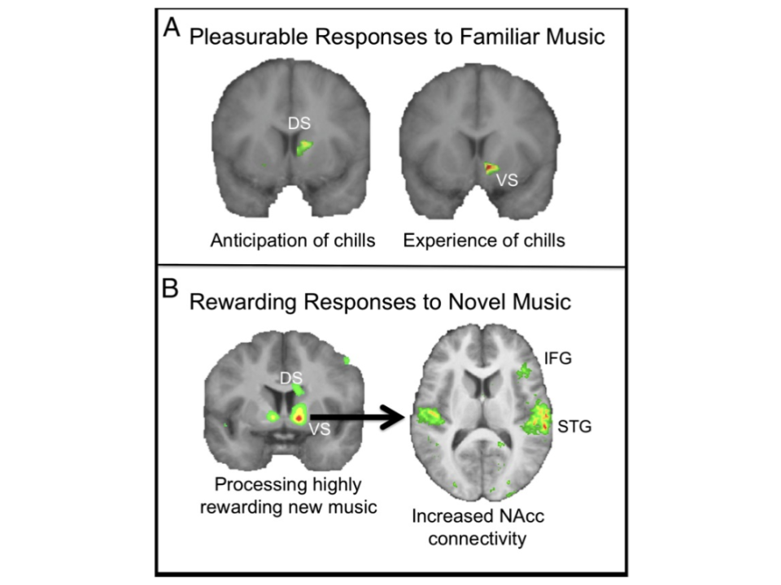
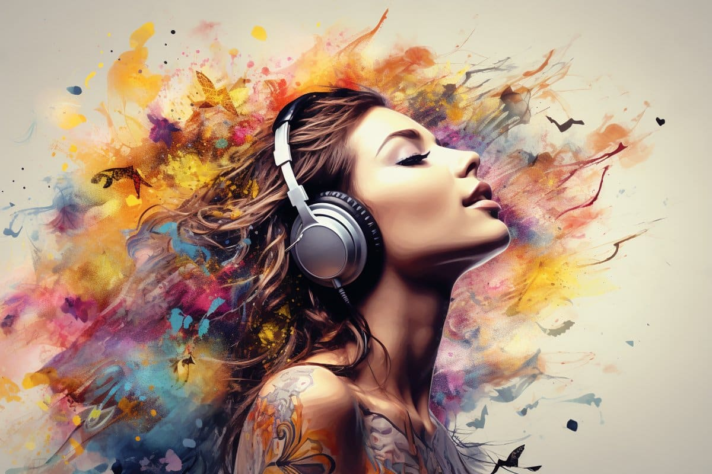
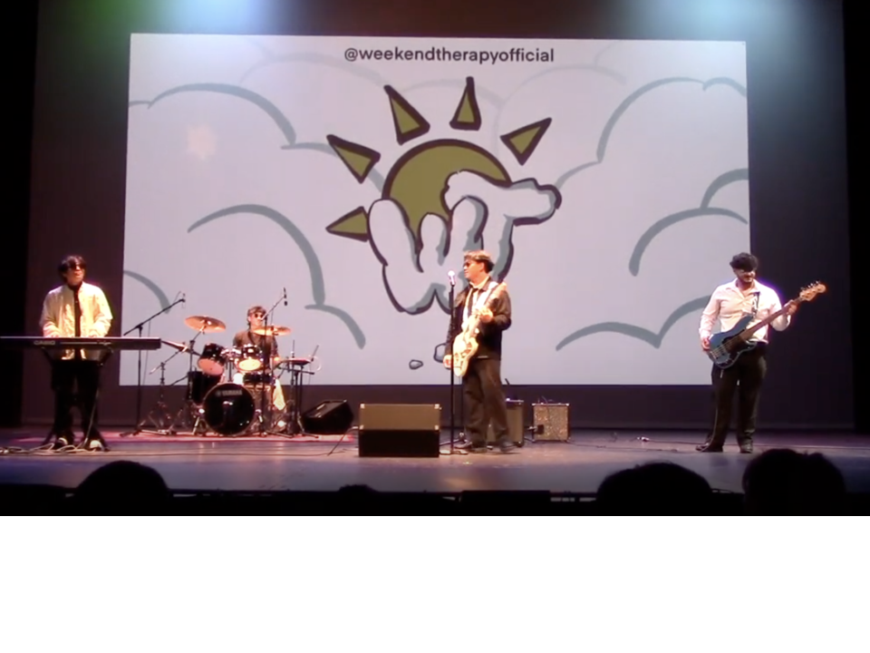

If I ask you to imagine what song should accompany a particular image or movie scene, or what piece of music best portrays a particular emotion, you could probably give me an answer.
That's probably because of the connection we have between music and our emotions.
And with this link, it’s no surprise that many people consider music to be their “therapy”, something that they can count on to help connect them to the emotions they’re feeling. It’s not just entertainment, it’s medicine for the mind and soul. In this blog, we will focus on the importance of music to us as a form of therapy, allowing us to cope with and amplify our emotions, and regulate our emotional well-being.
It is important to recognize a clear distinction between the use of "music as a therapy" and "music therapy". We believe "music therapy" to be more of a structured, evidence-based clinical practice that uses music interventions to achieve therapeutic goals, such as reducing anxiety or enhancing cognitive function. While we do find music to be valuable in this practice, we believe this to be less accessible than "music as a therapy", which will be our focus. "Music as a therapy" refers to the informal use of music by individuals to support emotional well-being, such as listening to music for stress relief or motivation. We wish to focus on this particular wording due to their greater accessibility, as anyone who has access to music can experience music as a therapy.

The Science Behind Music
This idea of music as a therapy isn’t just a feeling we share – It’s also backed up by science. The findings presented by Zatorre and Salimpoor (2013) reinforce the idea that music acts as an abstract reward, engaging “deeply rooted reward circuitry” in the brain that is normally activated by tangible, survival-related rewards like food or social bonding. In simpler terms, this means that listening to music activates reward systems in your brain that are similar to those when we eat or hang out with friends. We see that fundamentally, us humans are programmed to find dopamine through music, and it’s the same emotions that we feel for the basic human needs of social interaction and food. By stimulating these reward systems, music can serve as a powerful tool for managing stress, enhancing mood, and fostering emotional resilience. These effects suggest a biological foundation for why music is so important to us, and serves as a form of therapy without the controlled environment that we often view as “therapy”.
Brain imaging further supports these ideas, revealing that both familiar and novel music can stimulate pleasure centers in the brain, but in slightly different ways. For familiar music, anticipation and experience of emotional "chills" activate areas like the “dorsal striatum (DS) and ventral striatum (VS)”, showing that both prediction and fulfillment of musical patterns are inherently rewarding (Zatorre and Salimpoor 2013). In contrast, novel music shows “increased connectivity with regions such as the inferior frontal gyrus (IFG) and superior temporal gyrus (STG)”, highlighting how the brain processes new, emotionally rich experiences. In this way, our brains are wired in a way to find fulfillment through music. When you hear your favorite Rex Orange County song in concert and it gives you chills, that’s your brain telling you it’s satisfied. Similarly, your brain is stimulated when you listen to a new album from Kendrick Lamar for the first time. It’s a science that music is connected to your emotions, clinically proven.

What’s even cooler is that this brain activity is tied with songs that we can really relate to. A study by Blood and Zatorre showed that when participants listened to control music with similar songs that didn’t elicit strong emotions, this brain activity was nowhere near as strong (Blood and Zatorre 2001). This suggests that we aren’t sparked by what music sounds like, but the context, and why it’s particularly important to us. This idea of context is something we touched on in class, that certain memories or historical attachment adds to how we find value in music. Even with the same lyrics, a different performer with different intention can invoke different emotions in us.
Studies have also found there to be different emotions related to particular genres. A 2019 study by Thomas et al. explored how people's music preferences relate to their use of music for emotion regulation. Surveying 794 university students, the researchers found that individuals who favored genres like pop, rap/hip-hop, soul/funk, and electronica/dance were more likely to use music to increase emotional arousal and brain activity. Notably, fans of soul and funk music reported using these genres both to uplift positive emotions and to alleviate negative ones (Thomas et al. 2013). What’s interesting about this study is the difference between genres. It’s interesting to see that soul and funk were the most uplifting genres, perhaps tied to our natural instincts as humans to dance and sing along to relieve stress. This idea also aligned with our personal opinions, where most of our genres we found most positive were pop/house or funk. And perhaps the future style of studies could focus on more of the negative emotions, how we particularly align with those or alleviate these emotions, which focuses more on the therapeutic aspect of music in terms of arousing our emotional state.

Converge: Therapy through Performance and Community
One of the highlights of my semester is always attending Converge, an event held annually by Duke's Asian Student Association. It's a celebration of Asian culture and heritage through a broad array of performances by many groups on campus. What makes it so special is the therapy through connection and performance. Watching hundreds of other students - some of which are your friends - showcase their talents brings a sense of intimacy beyond usual performance, for it is people that you see everyday that are the performers. There is constant interaction between performer and audience, with cheers from the crowd as people chant the names of their friends and maybe even family. This emphasizes music as a therapy through connection, where we are all united by celebration of culture. In class, we saw how valuable this idea of call and response was specifically with Enka, and how powerful a form of music it was following World War II. And similarly, it’s powerful at Converge, and I feel like I’m part of a bigger community, that we are all connected here. And of course, we’re all Duke students, so there’s that, but this form of connection and social bonding is important to us as humans, and reflects the form of therapy we seek through community.

I was able to join a group as we presented one of my friends, Brooke Li, flowers after her performance, and congratulated her on her amazing acts. This was probably the best part of this particular event, that there really was no distinction between performers and audience, that ultimately the shared connection of asian heritage or interest and connection through being students together transcended the separation of performance. Afterwards, I got to interview a few of the performers, and we asked them a couple questions about their experience and what they enjoyed. Andy Ko, who performed with Pureun, said what he loved most about the performance was actually the preparation, the hours he would spend practicing with the team and getting closer to them. Moreover, he highlighted how he loved that it gave him an avenue to connect to his Asian heritage, which he believes he may have lost a bit in high school, where most of his friends were not asian and thus he didn’t find as much connection to his culture. This was a common sentiment throughout the couple of people I talked to, that many of the Asian-Americans felt that they had lost a sense of identity the more they grew up.
And this ties into the complex emotions that we seek through music: not that it necessarily comes from the music itself, but that it connects us in ways that words simply can’t. For Brooke, she’s a part of a korean music group, a language that she does not speak or understand, but she can recognize the emotion through the music, and for her, now has developed permanent memories to attribute to the songs she performed. And that adds to this idea of therapy through music, that we tie music to events in our lives, and it allows us to relive the emotions, the highs and lows, the joy of performance and the pains of practice. This connection between our emotions and music is exactly what we aim to describe, the form of therapy that music provides as it bridges thoughts and emotions without requiring a common language as a medium. And for Andy, music ties into his culture, and that connection is something that music provides for him, connecting him to his culture, his family, in a way that’s not possible when he’s away from home and family.
Personal Stories